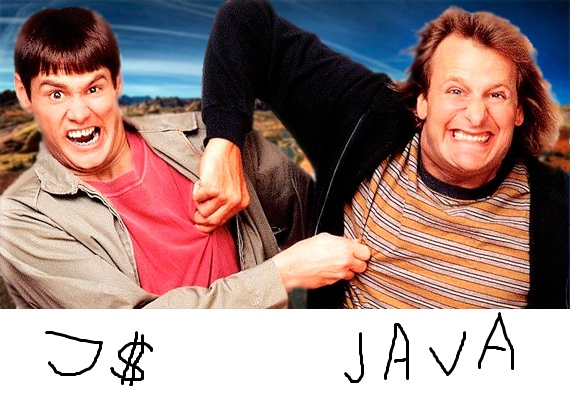

JS Essentials
(Padawan Level)
Created by Damo Krawcewicz / @damo_inc
“My Story” - by JS
JS had to "look like Java" only less so, [it had to] be Java's dumb kid brother or boy-hostage sidekick. Plus, it had to be done in ten days or something worse than JS would have happenedBrendan Eich, JS Creator
True Story

Data Types (some)
- String (no Char) – double or single quotes
- Number – 64 bit float. 11.0 is the same as 11. Don’t do financial Math in JS!
- Object
- Boolean
- Array
- Undefined - is the value of a variable with no value. (when you call a method that doesn’t exist)
- Null - Variables can be emptied by setting the value to null
Dynamically Typed
- You do not declare variable types
- JavaScript's typing is dynamic (meaning a variable can hold an object of any type and cannot be restricted).
Variable Scope
- Global - set on window when you run <script>
- Function – set privately inside of the function
- No block scope
- "this" keyword – refers to object currently running the function
Operators & Statements
- *Almost* the same as Java
- ++ (addition and String concatenation) (addition and String concatenation), -, ** / , /
- &&, ||, ++, --, etc
- Comments - Same as in Java (/* ... */ and // ...)
== and === Example
- The == comparison (just value, type coercion)
- The The === operator (value and type)
- Prefer === (strings can be compared with ==)
Reference: MDN
Semicolons
Semicolons are not mandatory (but helpful!)
Example:
return x
return
x
Press down key for answer
In the second one JS will first return, then evaluate x
Boolean
False Values
| Value | Type |
|---|---|
| 0 | Number |
| "" (empty string) | String |
| NaN | Number |
| false | Boolean |
| null | Object |
| undefined | Undefined |
True Values
“true”: anything else (including the string “false”!)
Function - 1st Citizen
Functions are objects that can be referenced, passed and assigned to (e.g. other function, null, etc).
Functions and ()
- We now know that function is an object
- To execute function you use ()
- Self executing function example:
Anonymous Function
- Similar to anonymous classes in Java
- Have no name
var car;
car.drive = function (){
console.log(‘vroooom’);
}
Namespaces!
- JS has no namespaces
- Two libraries with the same name global variable can clash
- There are some "hacks" that you can use
Common approach:
//1. create global object var for your app
var DAMO= {};
//2. populate your it with vars, functions.
DAMO.burp = function(){console.log('baaaa!')}
//3. if you want to call your own burp(), then it's hidden in DAMO!
DAMO.burp() //prints baaaa!
burp() //undefined!
//THE DEEPER YOU NEST THE LESS CHANCE OF CLASHING
//... and understanding WTF your code does :-P
JQUERY
New Kid on the Block!

JQuery Background
- Released in 2006 by John Resig
- Used by over 55% of the 10,000 most visited websites, jQuery is the most popular JavaScript library in use today (builtwith.com)
Use the Force!
- Simplifies DOM elements selection and manipulation
- Uses Sizzle CSS selector engine
- Events, AJAX, Animations and FX
- Multi-browser
- Extensible!
Document Object Model
- Defines standard way for accessing and manipulating HTML documents
- Represents html document as a tree structure
Document Object Model
<html lang="en-GB">
<head>
<title>Ka-pow!</title>
</head>
<body>
<div id="lonely"></div>
<div id="single_dad">
<div class="daddys_boy"></div>
<div class="daddys_girl"></div>
</div>
</body>
</html>

Try it!
- Use Chrome Dev Tools - Elements Tab to View and Edit DOM (F12 in Chrome)
- Note: there can only be one element with a given id, but many with the same class.
Selecting Elements in pure JS
Pure JS way (often requires traversing collections of returned objects):
elements = document.getElementsByTagName(name); //returns Nodelistelements = document.getElementsByClassName(names); //Nodelistelements = document.getElementsByName(name); //HTMLCollectionelement = document.getElementById(id); //returns Element ObjectSelecting Elements with JQUERY
<div id=“kickass” />
$(‘#kickass’) //ids are unique!
<div class=“small_box” />
<div class=“small_box” />
$(‘.small_box’) //matches 2 divs
<input type=“email” />
<input type=“email” />
$(‘input[type=email]’) //matches both
<input type=“date” />
<input type=“datetime” />
$(‘input[type*=date]’) //matches both
<input type=“date” />
<input type=“datetime” />
$(‘input[type$=ate]’) //matches first one
<div>
<img src=“bla.jpg” id=“1” />
</div>
<img src=“bla.jpg” id=“2” />
$(‘div > img’) //matches the first one, id=1
jQuery Wrapper
- $(selector) wraps the matched elements in a jQuery wrapper object.
- jQuery wrapper is never null!
- Use length === 0 to test for existence (if 0 then nothing matched
jQuery Wrapper
- $(selector) wraps the matched elements in a jQuery wrapper object.
- jQuery wrapper is never null!
- Use length === 0 to test for existence (if 0 then nothing matched
jQuery Selectors – multiple match
No need to iterate over, just apply method/function you want
//change all divs background to red
$(‘div’).css(‘background’ , ’red’);
$(‘div’).addClass(‘someClass’);
jQuery Methods – find()
Find - Get the descendants of each element in the current set of matched elements, filtered by a selector, jQuery object, or element.
var divs = $(‘div’); //remember, divs is a jQuery wrapper
var thumbs = divs.find(‘.thumb’);//elems with class thumb in divs
Traversal methods – next()
next() - Get the immediately following sibling of each element in the set of matched elements. If a selector is provided, it retrieves the next sibling only if it matches that selector
Traversal methods – prev()
prev() - Get the immediately preceding sibling of each element in the set of matched elements, optionally filtered by a selector.
Traversal methods – closest()
closest(selector) - For each element in the set, get the first element that matches the selector by testing the element itself and traversing up through its ancestors in the DOM tree.
Traversal methods – parent()
parent([selector]) - Get the parent of each element in the current set of matched elements, optionally filtered by a selector.
Traversal methods – children()
children - Get the children of each element in the set of matched elements, optionally filtered by a selector.
Traversal methods – index()
index - Search for a given element from among the matched elements
Events
Events - Old School
target.addEventListener(type, listener);
Or in IE < 9
target.attachEvent('onclick', modifyText);
Example
myBut.addEventListener(‘onclick’, function(){alert(‘yo’)})
//Or in IE < 9
myBut.attachEvent(‘onclick’, myOtherFunc)
jQuery Events Binding
One method for all browsers
element.bind(eventType,[data], handler(eventObject))
//example
$('#damo').bind('click', function() { alert(‘I lav ya man’); });
JQuery Events Shorthand
Many common event listeners have shorthand versions, for example:
element.click(function(evt){//do smthng})
Full list: API Docs
Events bubbling vs capturing
<div id=“1”>
<div id=“2”></div>
</div>
-
Capturing – Netscape
Click will first fire on id=1 then on id=2 - Bubbling – Microsoft
Click will first fire on id=2, then on id=1
Helper stop event function
function stopEvent(e) {
//we don’t like nulls
if(!e) var e = window.event;
//e.cancelBubble is supported by IE -
// this will stop the bubbling process.
e.cancelBubble = true;
e.returnValue = false;
//if supported – DO IT!
if(e.stopPropagation) e.stopPropagation();
if(e.preventDefault) e.preventDefault();
return false;
}
Ready vs Load
- DOM – browsers construct Document for each html doc; tree structure
- JS onLoad event – when all loaded (img, css, etc)
- jQuery document ready event – when DOM constructed (onDOMContentLoaded )
- In IE not poss to know when, so they wait for scroll bar to appear
//onLoad, after all images, css, etc loaded
<body onload=“doThis()” />
//onDOMContentLoaded, as soon as DOM ready - don't wait for img, css, etc
$(document).ready(function(){
//do your stuff.......
}
//Shorthand
$(function(){
//do your stuff.......
})
DOM load exercise (Timeline)
- Open Chrome Dev Tools, then Timeline
- Go to a content heavy page
- Click record button
- When finished loading stop recoding
- Observe the thin blue and red lines (DOM ready and load complete)

Callbacks
AJAX speaks JSON
- Object Literal example
- What is JSON, syntax + rules
- JSON parsing
Jquery AJAX()
- Object Literal example
- What is JSON, syntax + rules
- JSON parsing
jQuery getJSON() sendJSON()
Console.log function - Dev Tools
(function() {
var method;
var noop = function noop() {};
var methods = [
'assert', 'clear', 'count', 'debug', 'dir', 'dirxml', 'error',
'exception', 'group', 'groupCollapsed', 'groupEnd', 'info', 'log',
'markTimeline', 'profile', 'profileEnd', 'table', 'time', 'timeEnd',
'timeStamp', 'trace', 'warn'
];
var length = methods.length;
var console = (window.console |= window.console | {});
while (length--) {
method = methods[length];
// Only stub undefined methods.
if (!console[method]) {
console[method] = noop;
}
}
}());